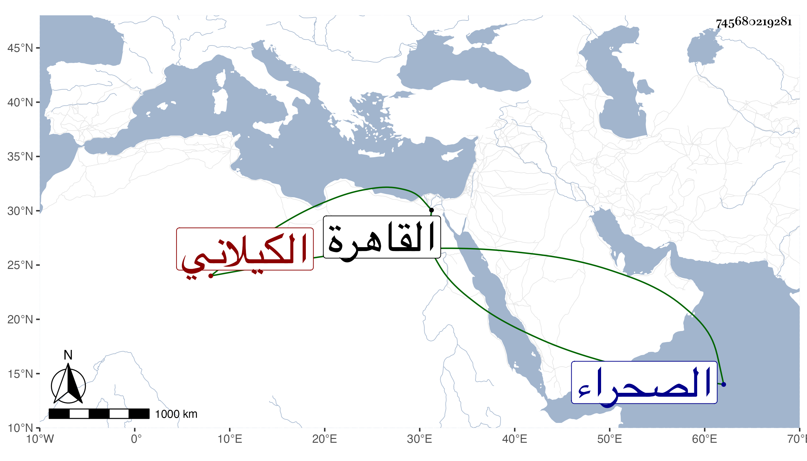

0902Sakhawi.DawLamic.ITO20230111-ara1.EIS1600.745680219281
Biography ID: 745680219281
327
محمد بن الجمال يوسف الكيلاني نزيل القاهرة وحالق لحيته بحيث يقال له قر ندل . قيل أنه كان من أكابر العلماء مع ميله للتصوف وموافقته لأهل السنة والجماعة وقد استقر به الملك في مشيخة القبة التي بالصحراء بعد تمنع وتورع ، ومن شيوخه الظهير التزمنتي وكان شافعيا . مات في شعبان سنة سبع وتسعين عن نحو الثمانين رحمه الله .
